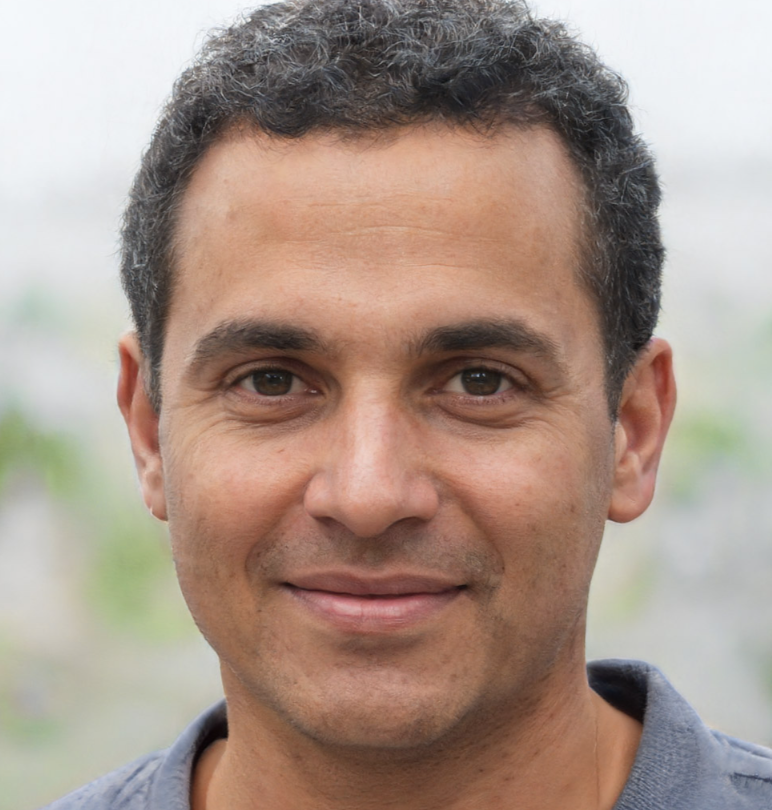

Target Audience
We have in our target, audience who loves both natural environments and new technologies can be the audience.
Personas
| Photo: |  |
| Name | Logan Adwelgoon |
| Job title | Programming Developer |
| Demographics: |
|
| Goals and tasks: |
He loves high technologies, but his wife wants to go nice green environments such as mountain or flowers.
|
| Environment: | For a long time, he worked hard without any break time. He decides to go travelling with his wife. He wants to see many kinds new tech items such as robots, new LED, and so on. However, his wife wants to stay in forest and feel relax. |
| Photo: | |
| Name | Kevin Ariana |
| Job title | student(major: Engineer) |
| Demographics: |
|
| Goals and tasks: |
He is young and loves adventure. Also, he likes going several worlds.
|
| Environment: | He travelled a lot of times in Europe. He wants to go another country. He decides to go Asia because he never been gone there. |
Scenarios
- Do you want to try Korean food?
- Do you want both technologies and natural environments?
- Don't You have enough money even though you went to South Korea?